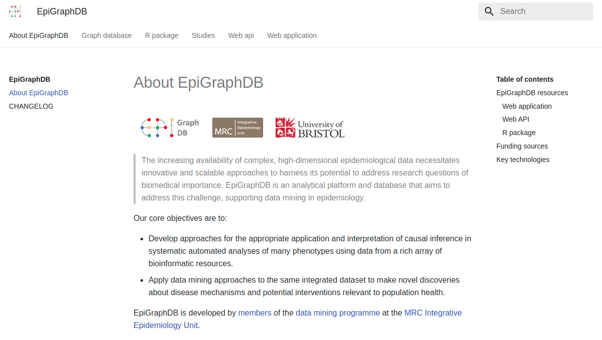
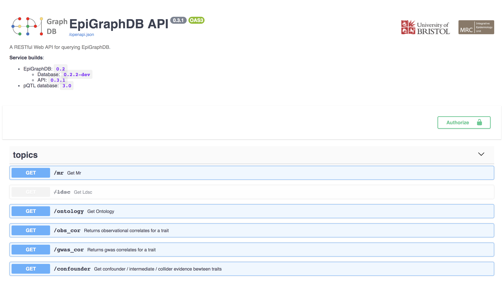
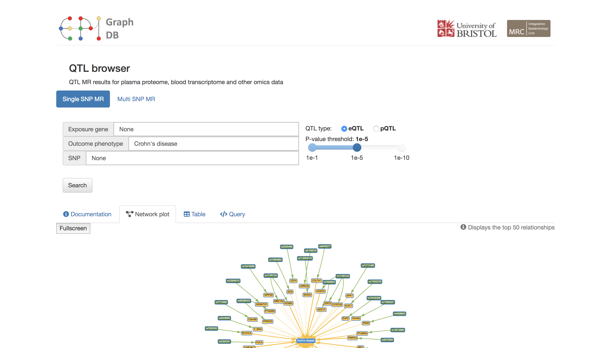
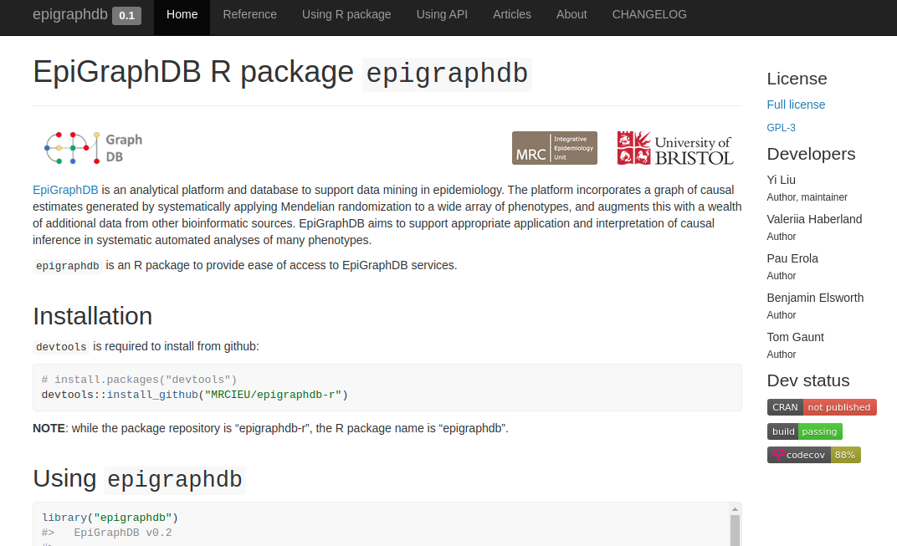

EpiGraphDB is an analytical platform and database to support data mining in epidemiology. The platform incorporates a graph of causal estimates generated by systematically applying Mendelian randomization to a wide array of phenotypes, and augments this with a wealth of additional data from other bioinformatic sources. EpiGraphDB aims to support appropriate application and interpretation of causal inference in systematic automated analyses of many phenotypes.
epigraphdb is an R package to provide ease of access to EpiGraphDB services. We will refer to epigraphdb as the name of the R package whereas "EpiGraphDB" as the overall platform.
Installation
To install the latest development version from github ( devtools is required ):
# install.packages("devtools")
devtools::install_github("MRCIEU/epigraphdb-r")To install a stable version from CRAN:
install.packages("epigraphdb")NOTE: while the package repository is “epigraphdb-r”, the R package name is “epigraphdb”.
Using epigraphdb
epigraphdb provides a simple and intuitive way to query the API, as:
library("epigraphdb")
#>
#> EpiGraphDB v0.3 (API: https://api.epigraphdb.org)
#>
mr(outcome_trait = "Body mass index")
#> # A tibble: 370 x 12
#> exposure_id exposure_name outcome_id outcome_name estimate se
#> <chr> <chr> <chr> <chr> <dbl> <dbl>
#> 1 627 Epiandroster… 785 Body mass i… 0.0950 2.28e-3
#> 2 541 X-11787 835 Body mass i… -0.0578 1.77e-4
#> 3 971 Ulcerative c… 835 Body mass i… -0.0111 1.76e-4
#> 4 60 Waist circum… 835 Body mass i… 0.861 2.07e-2
#> 5 UKB-a:426 Eye problems… 94 Body mass i… -1.12 1.90e-2
#> 6 UKB-a:373 Ever depress… 95 Body mass i… -0.616 4.80e-4
#> 7 29 Birth length 95 Body mass i… -0.141 5.67e-4
#> 8 350 Laurate (12:… 974 Body mass i… 0.418 7.10e-3
#> 9 UKB-a:124 Treatment/me… 974 Body mass i… -5.14 1.08e-1
#> 10 95 Body mass in… 974 Body mass i… 0.981 2.79e-2
#> # … with 360 more rows, and 6 more variables: p <dbl>, ci_upp <dbl>,
#> # ci_low <dbl>, selection <chr>, method <chr>, moescore <dbl>)For more information on how to use the epigraphdb R package and how to use the API in R please check out the following articles:
Package functionalities
Users can use the general query function query_epigraphdb to get data from an API endpoint on EpiGraphDB without having to deal with HTTP requests by themselves. We also provide a list of functions (see the table below) that are equivalent to the upstream endpoints for the ease of use.
EpiGraphDB resources
| link | screenshot |
|---|---|
| docs |  |
| API |  |
| web application |  |
| r package |  |
Citation
Please cite EpiGraphDB as
Yi Liu, Benjamin Elsworth, Pau Erola, Valeriia Haberland, Gibran Hemani, Matt Lyon, Jie Zheng, Oliver Lloyd, Marina Vabistsevits, Tom R Gaunt, EpiGraphDB: a database and data mining platform for health data science, Bioinformatics, btaa961, https://doi.org/10.1093/bioinformatics/btaa961
@article{epigraphdb2020bioinformatics,
author = {Liu, Yi and Elsworth, Benjamin and Erola, Pau and Haberland, Valeriia and Hemani, Gibran and Lyon, Matt and Zheng, Jie and Lloyd, Oliver and Vabistsevits, Marina and Gaunt, Tom R},
title = {{EpiGraphDB}: a database and data mining platform for health data science},
journal = {Bioinformatics},
year = {2020},
month = {11},
issn = {1367-4803},
doi = {10.1093/bioinformatics/btaa961},
url = {https://doi.org/10.1093/bioinformatics/btaa961},
note = {btaa961},
eprint = {https://academic.oup.com/bioinformatics/advance-article-pdf/doi/10.1093/bioinformatics/btaa961/34178613/btaa961.pdf}
}